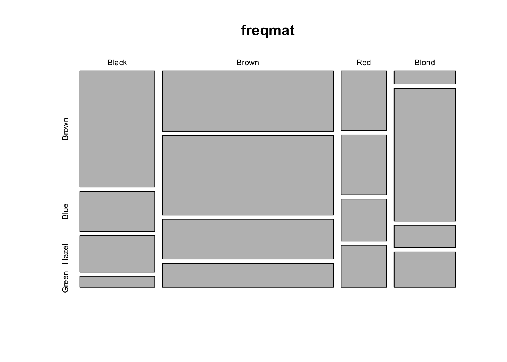
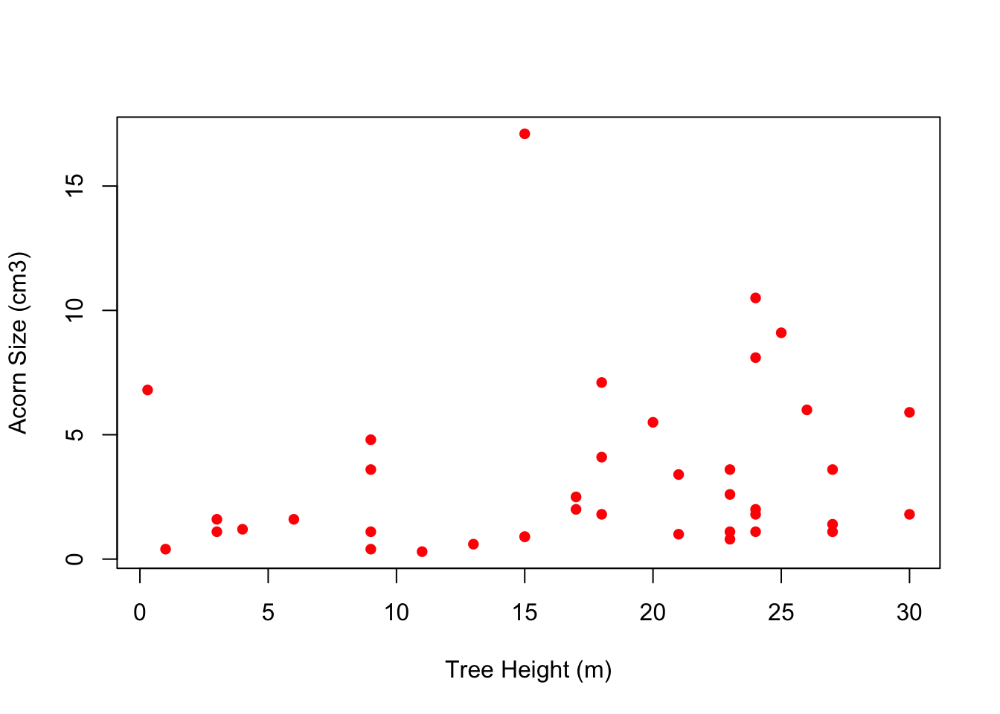

R is the software. RStudio is what is known as an Integrated Development Environment (IDE). Basically, an IDE is a way of running base software the provides various tools to make the coding experience easier (e.g., an editor with syntax highlighting, debugger, and interactive graphics facilities).
Here is a brief video explaining what to do:
What follows are some old notes that are very Base-R focused. The thing is, even though most people use the tidyverse tools these days, it’s still valuable to understand Base-R (since that’s what everything else is built upon!). This is particularly true for the material that forms the bulk of these notes. Making theoretical scientific figures (chapter Chapter 3) is simply easier in Base-R. You typically don’t need to do complex data wrangling to make a theoretical figure, so the powerful data-manipulation tools of dplyr, for instance, are unnecessary. Sometimes, we want to utilize the grid package, which underlies the tidyverse graphics library ggplot2, directly. Again, I find this more straightforward in Base-R.
The igraph package for drawing graphs (a.k.a., “networks”) that we discuss in chapter Chapter 4 also runs in Base-R.
1.2 What Is R?
R is statistical numerical software
R is a “dialect” of the S statistical programming language
R is a system for interactive data analysis
R is a high-level programming language
R is free
R is state-of-the-art in statistical computing. It is what many (most?) research statisticians use in their work
1.3 Why Use R?
R is FREE! That, by itself, is almost enough. No complicated licensing. Broad dissemination of research methodologies and results, etc.
R is available for a variety of computer platforms (e.g., Linux, MacOS, Windows).
R is widely used by professional statisticians, social scientists, biologists, demographers, and other scientists. This increases the likelihood that code will exist to do a calculation you might want to do.
R has remarkable online help lists, tutorials, etc.
R represents the state-of-the-art in statistical computing.
1.4 Wouldn’t Something Menu-Driven Be Easier?
Fallacious thinking
For teaching, text-based input is always better
Example code can be copied and input exactly; you can then tweak it and see what happens, facilitating the learning process
An example
What follows is a pretty complicated graph of the grooming interactions of a group of rhesus monkeys, Macaca mulatta, observed by Sade (1972)
With the code I used to generate this graph, you can recreate the figure exactly. Try it! It doesn’t matter if you have no idea what you’re doing yet. That’s the point.
The only thing you need to make this figure is to install and load the library igraph
A note on loading data: the above code loads a data file apparently called "./data/sade1.txt"
What does that mean?
The one dot followed by a slash, ./, means to go into the sub-directory called data, which is in our current working directory, and read the text file called sade1.txt
If the data sub-directory was actually in, say, the same directory where our working directory is located (i.e., they were two sub-directories of the same higher-level folder), we would use two dots, ../, which means to go out one directory in the hierarchy
This is actually not R but the underlying OS file system
Learning about the file/directory structure of your computer is actually an important (and under-appreciated) data-science skill
Check out the fantastic MIT course The Missing Semester of Your CS Education for information on various tools that can really improve your workflows and general skill-level
1.6 A Few Conventions and Other Helpful Bits
There are some things that you will see over and over in the code embedded in this document
The assignment operator <- is used to assign a value to a name.
The value is on the right-hand side of the operator and the name is on the left side
You can use = for assignment, but I don’t recommend it (it doesn’t work at all levels, makes the code harder to read, etc.)
Different environments make it more or less easy to use <-. In RStudio, hit the option key and the minus sign simultaneously
Comments are marked by #: anything following the hash will be ignored by R
Use comments liberally to help you (and others) understand your code
In these notes, the output that you would see on your own command line is marked in the grey box with two (non-italic) hashes, # #
Sometimes I enclose a command in parentheses; this is simply to force R to echo the output (for pedagogical purposes)
# a commentx <-c(1,2,3)(y <-c(1,2,3))
[1] 1 2 3
You will probably want to seek help on functions. At the command line, simply type a question mark followed immediately by the function you want to query, ?function.name
When you are done with your R session, type q() at the command line
R will ask you if you want to save your workspace. For now, you probably don’t.
Check out the much more comprehensive Introduction to R for all the language details.
1.7R as a Calculator
# addition2+2
[1] 4
# multiplication2*3
[1] 6
a <-2b <-3a*b
[1] 6
# division2/3
[1] 0.6666667
b/a
[1] 1.5
1/b/a
[1] 0.1666667
# note order of operations!1/(b/a)
[1] 0.6666667
# parentheses can override order of operations# an exponentialexp(-2)
[1] 0.1353353
# why we ager <-0.02exp(-r*45)
[1] 0.4065697
# something more trickyexp(log(2))
[1] 2
# generate 20 normally distributed random numbersrnorm(20)
All numbers in R are of the form double (i.e., double-precision floating point numbers). This can be a bit confusing for people who are used to languages with integer data types (like, most languages!). Entering something that looks like an integer doesn’t mean it is.
# it looks like an integer, but don't be fooled!a <-2is.numeric(a)
[1] TRUE
is.integer(a)
[1] FALSE
is.double(a)
[1] TRUE
Integer
OK, technically R does have an integer class, but it is used very rarely and many functions will convert integers into doubles anyway. If you really must have an integer (e.g., because you are passing output to external C or FORTRAN code that expects it), add the suffix L to the entered number.
a <-2Lis.integer(a)
[1] TRUE
Character
Strings are represented by the character data class.
Factors are a data type for encoding categorical data. Notice that factors are printed without the quotes. This is because R stores them as a set of codes. Data of type “factor” are different from data of type “character” (which is what plain text is). Note the difference below between factor and character data. Because factors get used in statistical models, they are actually represented as numbers (the levels) that have associated names. Vectors, on the other hand, are just lists of numbers.
countries <-factor(c("Uganda", "Tanzania", "Kenya", "Rwanda"))countries
[1] Uganda Tanzania Kenya Rwanda
Levels: Kenya Rwanda Tanzania Uganda
# a trick to get some insight into how factors are handled by Runclass(countries)
TRUE and FALSE are reserved keywords, while T and F are global constants set to these. These logical variables are essential tools for subsetting data. You also use them extensively in setting optional arguments of functions.
t.or.f <-c(T,F,F,T,T)is.logical(t.or.f)
[1] TRUE
aaa <-c(1,2,3,4,5)# subsetaaa[t.or.f]
[1] 1 4 5
List
You can mix different types of data in a list using the command list(). This is useful when you write your own functions and want to output multiple things. Use the function str() to give you information about a list.
Sometimes this can be tricky: the second argument tells R how many repetitions.
This argument can be a vector and this, along with the possibility of a vector of the items you want repeated too, allows you to create quite complex patterns very easily.
rep(2,10)
[1] 2 2 2 2 2 2 2 2 2 2
rep(c(1,2),10)
[1] 1 2 1 2 1 2 1 2 1 2 1 2 1 2 1 2 1 2 1 2
rep(c(1,2), c(5,10))
[1] 1 1 1 1 1 2 2 2 2 2 2 2 2 2 2
rep("R roolz!", 3)
[1] "R roolz!" "R roolz!" "R roolz!"
1.11 Creating Matrices
As we said, a vector is a list of numbers
A matrix is a rectangular array of numbers – it is a vector of vectors, with the numbers indexed by row and column.
One way to create matrices is to “bind” columns together using the commands cbind() or rbind().
# age distribution of Gombe chimps in 1980 and 1986cx1980 <-c(7, 13, 8, 13, 5, 35, 9)cx1988 <-c(9, 11, 15, 8, 9, 38, 0)( C <-cbind(cx1980, cx1988) )
Both the warning message and the output can seem a little odd to the uninitiated
R uses a recycling rule for filling out vectors and matrices
When you try to put together things that are neither the same length nor multiples of each other, you get a warning
We can use the recycling rule to make a matrix of ones:
( X <-matrix(1,nr=3,nc=3) )
[,1] [,2] [,3]
[1,] 1 1 1
[2,] 1 1 1
[3,] 1 1 1
Note that using the short version of nrow, nr, is sufficient. This is often true – you can use the minimum name that is unambiguous.
The matrix() command requires at least 3 arguments: (1) a vector of numbers that will form the elements of the matrix, (2) the number of rows, and (3) the number of columns.
For small matrices, you might want to enter the vectors of values manually
If you do this, it’s important to know that R fills matrices column-wise (the standard for FORTRAN and definitely not the way most people actually work!).
Use the optional argument byrow=TRUE to make R read in the data row-wise
# cross-classified data on hair/eye color freq <-c(32,11,10,3, 38,50,25,15, 10,10,7,7, 3,30,5,8)hair <-c("Black", "Brown", "Red", "Blond")eyes <-c("Brown", "Blue", "Hazel", "Green")freqmat <-matrix(freq, nr=4, nc=4, byrow=TRUE)dimnames(freqmat)[[1]] <- hairdimnames(freqmat)[[2]] <- eyesfreqmat
Brown Blue Hazel Green
Black 32 11 10 3
Brown 38 50 25 15
Red 10 10 7 7
Blond 3 30 5 8
# might as well do something with itmosaicplot(freqmat)

1.12 Data Frames
A data frame is an R object which stores a data matrix. A data frame is essentially a list of variables which are all the same length. A single data frame can hold different types of variables.
To access a variable contained in a data frame, use the data frame name followed by the variable name, separated by a dollar sign, $.
# five columns of datasatu <-c(1,2,3,4,5)dua <-c("a","b","c","d","e")tiga <-sample(c(TRUE,FALSE),5,replace=TRUE)empat <- LETTERS[7:11]lima <-rnorm(5)# construct a data frame(collection <-data.frame(satu,dua,tiga,empat,lima))
satu dua tiga empat lima
1 1 a FALSE G -0.24012272
2 2 b TRUE H 1.62867872
3 3 c FALSE I 1.34427662
4 4 d TRUE J 0.04494688
5 5 e FALSE K 0.11910426
# extract the third variablecollection$tiga
[1] FALSE TRUE FALSE TRUE FALSE
by default, data.frame() will produce row numbers (seen to the left of the first column in the data frame collection above)
1.13 Directories and Paths
R uses a working directory. The default can be set in the Preferences or using an initialization file (i.e., a file that is always read when R starts up).
If you read in a file without specifying a path, R will search in the working directory; if there is no file matching the name you provide, you receive an error message
We can query the working directory using the command getwd() and we can change it using setwd()
You can always load a file by giving either a full or relative path
getwd()
[1] "/Users/jhj1/Teaching/graphics"
#setwd("/Users/jhj1/Projects/git/AABA2023_Workshop/Markdown")## can't actually change it because it screws up the rendering!
Setting the working directory is actually not recommended
It is not a good scientific practice that favors replicability/interoperability/etc.
It’s generally better to use R Projects in RStudio (as we do in this workshop)
To start an R Project, either double-click on the .RProj file in the project’s directory or clicking on the R Project menu button in the upper right corner of your RStudio frame
To share the work you have done in an R Project with collaborators, students, or scientists looking to replicate your work, simply share the folder containing the .RProj file
When you quit R, you will be asked if you want to save your R session
If a session has previously been saved in your working directory, there will be a copy of the workspace in the R binary format named .RData
When R is started in a particular directory, if there is an .RData file in that directory, it will load automatically
This can lead to some surprising behavior if you don’t know that it can happen
Automatically saving and loading workspaces is also not recommended
Best scientific practice involves constructing your workspace using broadly-interoperable data formats (e.g., .csv files) and scripts
1.14 Reading Files
There are a number of ways to read data into R. Probably the easiest and most frequently used involves reading data from plain-text (ASCII) files. These files can be space, tab, or comma delimited.
You can create these files in a spreadsheet program like Excel or output them from most other statistical packages.
You can read these from a local directory or from an internet source
R expects delimited files to be “white-space delimited” with values separated by either tabs or spaces and rows separated by carriage returns
It’s always a good idea to specify whether or not you have a header (i.e., column names). If you don’t, say header=FALSE; if you do, obviously, say header=TRUE
# read a space-delimitted file (a sociomatrix of kids 17 kids aggressive acts toward each other)(kids <-read.table("./data/strayer_strayer1976-fig2.txt", header=FALSE))
If your file is delimited by something other than spaces, it is a good idea to use a slightly different function, read.delim() and specify exactly what the delimiter is
Frequently, there will be non-tabular information at the top of a file (e.g., meta-data describing the data set). Use the skip=n option, where n is the number of lines you want skipped.
Species Region Range acorn.size tree.height
1 Quercus alba L. Atlantic 24196 1.4 27
2 Quercus bicolor Willd. Atlantic 7900 3.4 21
3 Quercus macrocarpa Michx. Atlantic 23038 9.1 25
4 Quercus prinoides Willd. Atlantic 17042 1.6 3
5 Quercus Prinus L. Atlantic 7646 10.5 24
6 Quercus stellata Wang. Atlantic 19938 2.5 17
1.15 The Workspace
R handles data in a manner that is different than many statistical packages.
In particular, you are not limited to a single rectangular data matrix at a time.
The workspace holds all the objects (e.g., data frames, variables, functions) that you have created or read in.
You can essentially have as many data frames as your machine’s memory will allow.
To find out what lurks in your workspace, use objects() command.
To remove an object, use rm().
If you really want to clear your whole workspace, you can use the following syntax: rm(list=ls()). Beware, though. Once you do this, you don’t get the data back.
Because the R workspace can contain many different variables and even multiple data frames, you must be aware of scope
When we extract columns of a data frame (e.g., if we wanted to plot them) we need to use the syntax data.frame$col.name
## load it again because we cleared all objects!quercus <-read.delim("./data/quercus.txt", skip=24, sep="\t", header=TRUE)plot(quercus$tree.height, quercus$acorn.size, pch=16, col="red", xlab="Tree Height (m)", ylab="Acorn Size (cm3)")

It can be a hassle having to type the data frame name (and dollar sign) over and over again
With the with() function, we can set up a local scoping rule that allows us to drop the need to type the data frame name (and dollar sign) to access columns of a data frame
Apparently, there are R users who gladly use with and those who hate its use. I fall into the former category.
Note that this is a very Base-R perspective. the tidyverse (e.g., ggplot2, etc.) changes many of these issues.
1.17 Indexing and Subsetting
Index (and access) the elements of a vector using square brackets. myvec[1] takes the first element of a vector called myvec.
Use the colon (:) operator for sequences. myvec[1:5] takes the first five elements of myvec.
R is unusual in that it allows negative indexing: myvec[-1] takes all elements of except the first one. To exclude a sequence, you need to place the sequence within parentheses: myvec[-(1:5)].
Vector indices don’t have to be consecutive: myvec[c(2,5,1,11)].
myvec <-c(1,2,3,4,5,6,66,77,7,8,9,10)myvec[1]
[1] 1
myvec[1:5]
[1] 1 2 3 4 5
myvec[-1]
[1] 2 3 4 5 6 66 77 7 8 9 10
myvec[-(1:5)]
[1] 6 66 77 7 8 9 10
# try without the parentheses#myvec[-1:5]myvec[c(2,5,1,11)]
[1] 2 5 1 9
Access the elements of a data frame using the dollar sign. Subsetting anything other than a data frame uses square brackets.
dim(quercus)
[1] 39 5
size <- quercus$acorn.sizesize[1:3] #first 3 elements
The comma with nothing in front of it means take every row in the column named "tree.height".
1.18 More Subsetting
Positive indices include, negative indices exclude elements
1:3 means a sequence from 1 to 3
You can only use a single negative subscript, i.e., you can’t use quercus$acorn.size[-1:3]
Of course, you can get around this by enclosing the vector in parentheses quercus$acorn.size[-(1:3)]
The logical operators are == (equal), != (not equal), and the various greater than/less than symbols: >, >=, <, <=
Further logicals are & (and), | (or), ! (not), && (another and), || (another or)
& and ! work elementwise on vectors: element 1 is compared in the two vectors, then element 2, and so on
&& and || are tricky. These logical tests evaluate left to right, examining only the first element of each vector (they go until a result is determined for ||).
Why would you want that?? In general, you don’t. It makes some calculations faster.
When you refer to a variable in a data frame, you must specify the data frame name followed a dollar sign and the variable name quercus$acorn.size
Testing for equality is just a special case of a logical test. We frequently want to identify numbers either above or below some criterion.
The presence of NA values in your data set can lead to some surprising consequences.
You can’t test for a NA the way you would test for any other value (i.e., using the == operator) since variable==NA is like asking in English, is the variable equal to some number I don’t know? How could you know that?!
It also doesn’t make any sense to add one to something you don’t know what it is – 1+NA is meaningless!
R therefore provides the function is.na() that allows us to subset using logicals.
Sorting data frames is a bit more involved, but still straightforward
use the function order()
# five columns of data againsatu <-c(1,2,3,4,5)dua <-c("a","b","c","d","e")tiga <-sample(c(TRUE,FALSE),5,replace=TRUE)empat <- LETTERS[7:11]lima <-rnorm(5)# construct a data frame(collection <-data.frame(satu,dua,tiga,empat,lima))
satu dua tiga empat lima
1 1 a TRUE G -0.5836921
2 2 b FALSE H 0.9042409
3 3 c TRUE I -0.1804774
4 4 d FALSE J 1.3276193
5 5 e TRUE K 0.3944727
o <-order(collection$lima)collection[o,]
satu dua tiga empat lima
1 1 a TRUE G -0.5836921
3 3 c TRUE I -0.1804774
5 5 e TRUE K 0.3944727
2 2 b FALSE H 0.9042409
4 4 d FALSE J 1.3276193
there are definitely better ways to do this using tidy tools like dplyr::arrange()!
1.21 Naming Data
The matrix of aggressive interactions among kids had neither column nor row names
We can add the codes used in the Strayer and Strayer (1976) paper
## load it again because we cleared all objects!kids <-read.table("./data/strayer_strayer1976-fig2.txt", header=FALSE)kid.names <-c("Ro","Ss","Br","If","Td","Sd","Pe","Ir","Cs","Ka","Ch","Ty","Gl","Sa", "Me","Ju","Sh")colnames(kids) <- kid.namesrownames(kids) <- kid.nameskids
colnames() and rownames() are convenience functions
A More General Method Will Be Presented Next Slide
1.22 Working on Lists
apply() applies a function along the margins of a matrix
lapply() applies a function to a list and generates a list as its output
sapply() is similar to lapply() but generates a vector as its output
aaa <-list(alpha =1:10, beta =rnorm(100), x =sample(1:100, 100, replace=TRUE))lapply(aaa,mean)
$alpha
[1] 5.5
$beta
[1] -0.0708709
$x
[1] 53.53
# more compact as a vectorsapply(aaa,mean)
alpha beta x
5.5000000 -0.0708709 53.5300000
# cross-tabulation of sex partners from NHSLSsextable <-read.csv("./data/nhsls_sextable.txt", header=FALSE)dimnames(sextable)[[1]] <-c("white","black","hispanic","asian","other")dimnames(sextable)[[2]] <-c("white","black","hispanic","asian","other")# calculate marginals(row.sums <-apply(sextable,1,sum))
white black hispanic asian other
1177 278 158 26 26
(col.sums <-apply(sextable,2,sum))
white black hispanic asian other
1194 281 137 13 40
# using sapply() gives similar outputsapply(sextable,sum)
white black hispanic asian other
1194 281 137 13 40
# compare the output of sapply() to lapply()lapply(sextable,sum)
The apply family of functions used to be more widely used and have been largely supplanted by the immensely powerful tools in dplyr and the tidyverse more generally
1.23 Flow Control: if
if allows you to conditionally evaluate expressions.
The basic syntax of an if statement is: if(condition) true.branch else false.branch
The else part of the statement is optional
(coin <-sample(c("heads","tails"),1))
[1] "heads"
if(coin=="tails") b <-1else b <-0b
[1] 0
Sometimes you can use the very efficient ifelse statement
ifelse takes three arguments: (1) the logical test, (2) the result if TRUE, (3) the result if FALSE
x <-4:-2# sqrt(x) produces warnings, but using ifelse to check works without producing waringssqrt(ifelse(x >=0, x, NA))
[1] 2.000000 1.732051 1.414214 1.000000 0.000000 NA NA
1.24 Flow Control: for
If you want to repeat an action over and over again you need a loop
Loops are mostly generated using for statements
The basic syntax of a for loop is: for(item in sequence) statement(s)
x <-1:5for(i in1:5) print(x[i])
[1] 1
[1] 2
[1] 3
[1] 4
[1] 5
That’s a pretty silly for loop – there are much more important uses of for loops!
If there are multiple statements executed by a for loop, those statements must be enclosed in curly braces, {}
We need to be careful with for loops because they can slow code down, particularly when they are nested and the number of iterations is very large.
Vectorizing and using mapping functions like apply and its relatives can greatly speed your code up
1.25 Using Packages
Much of the functionality of R comes from the many contributed packages
To use a package, you must first install it
This can be done at the command line using install.packages(package_name)
It is often more convenient to use a menu command
in RStudio this is under Tools>Install Packages...
Once a package is installed, you must load it in order to use it
Do this using the library() command
library(igraph)#| warning: false#| message: false# might as well do something with it# a small graphg <-make_graph( c(1,2, 1,3, 2,3, 3,5), n=5 )plot(g)